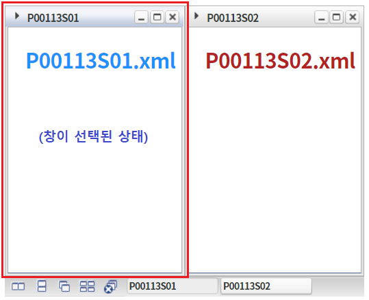
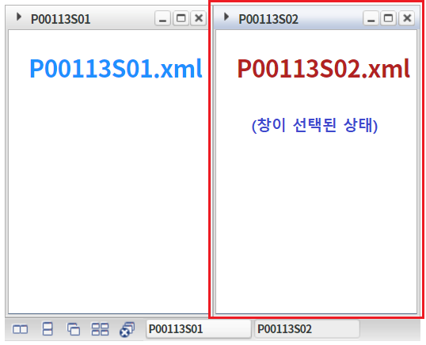
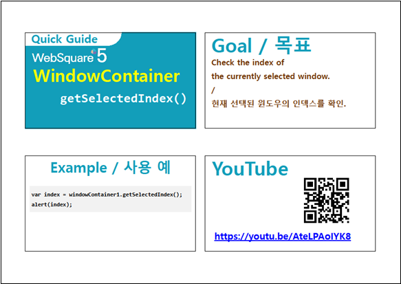

선택된 창(window)의 Index 값을 반환받는 예제입니다.
선택된 창(window)의 Index 반환 받기
WindowContainer의 왼쪽에 배치된 창 [P00113S01]을 선택합니다.
[브라우저(Chrome) 실행 예시]

버튼 선택된 창의 Index 반환 받기를 클릭합니다.
숫자형 값 "0"이 alert됩니다.
WindowContainer의 오른쪽에 배치된 윈도우 [P00113S02]을 선택합니다.
[브라우저(Chrome) 실행 예시]

버튼 선택된 창의 Index 반환 받기를 클릭합니다.
숫자형 값 "1"이 alert됩니다.
원하는 시점에 method getSelectedIndex를 이용하여 스크립트를 작성합니다.
[소스 코드 예시]
//예제 파일의 스크립트 "scwin.btn_ex1_onclick"를 참고하세요. var numIndex; //선택된 윈도우의 index 반환 받기 numIndex = wdc_exam1.getSelectedIndex();
getSelectedIndex( )
[웹스퀘어5 SP5 개발 가이드] WindowContainer
링크 : https://docs1.inswave.com/sp5_user_guide/2059d4ce88b2fc16#c65cb349eb266637
[웹스퀘어5 SP5 개발 가이드] WindowContainer 윈도우 인덱스 확인
링크 : https://docs1.inswave.com/sp5_user_guide/2059d4ce88b2fc16#3e207d45292a7d48
WindowContainer 윈도우 인덱스 확인
링크 : https://youtu.be/AteLPAoIYK8
